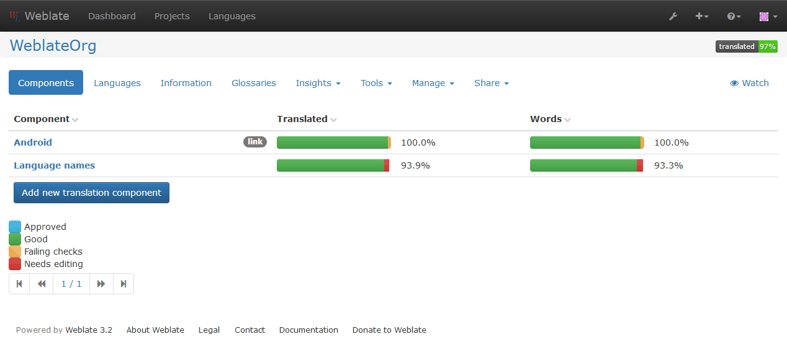
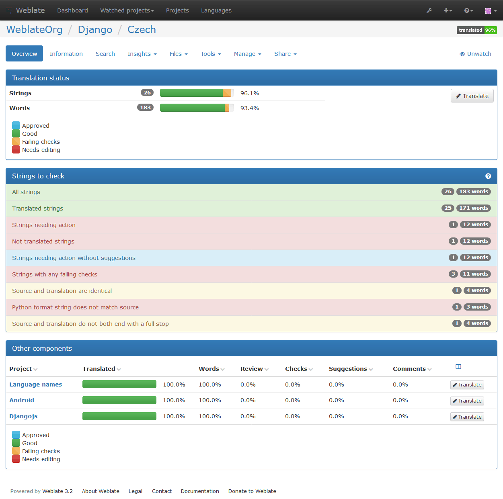
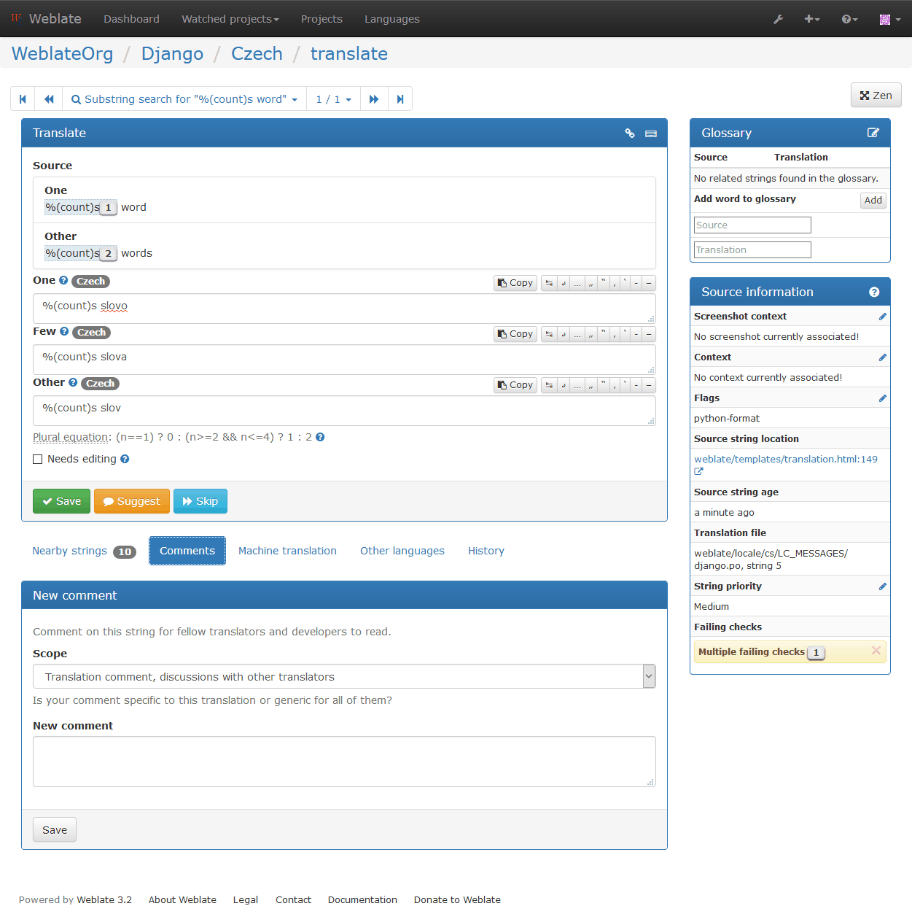
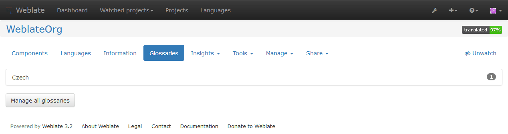
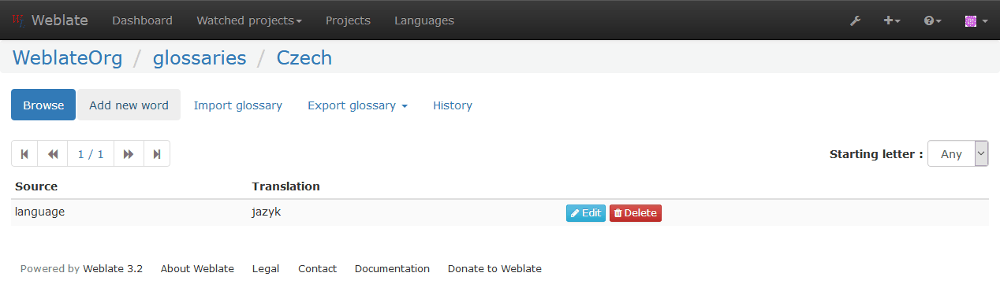
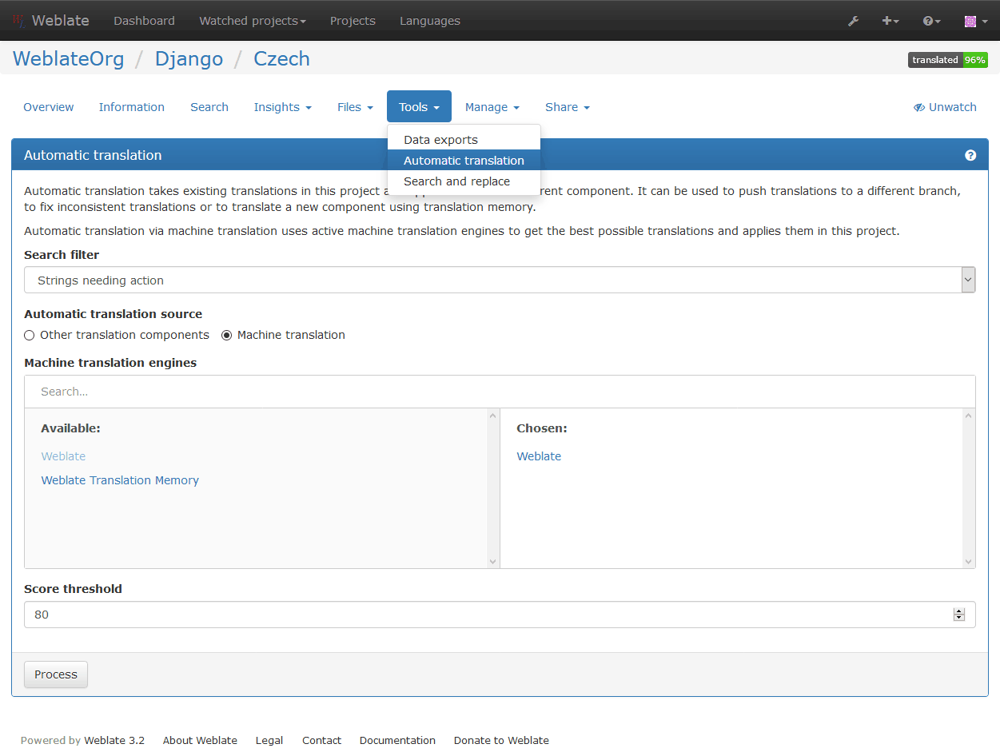

Translating using Weblate¶
Thank you for interest in translating using Weblate. Weblate can be used to translate many projects and every project can have different settings which influence whether you can translate or add suggestions only.
Overall there are the following possibilities for translating:
- Projects accepts direct translations
- Projects accepts only suggestions and those are accepted once they get a defined number of votes
There are also some options for translation project visibility:
- It can be publicly visible and anybody can contribute
- It can be visible only to certain group of translators
Please see 翻訳ワークフロー for more information about translation workflow.
Translation projects¶
Translation projects are used to organize translations into related groups. It can be one software component, book or anything closely related.
Translation links¶
Once you navigate to a translation, you will be shown set of links which lead to translation. These are results of various checks, like untranslated or strings needing review. Should no other checks fire, there will be still link to all translations. Alternatively you can use the search field to find a translation you need to fix.
Suggestions¶
As an anonymous user, you have no other choice than making a suggestion. However, if you are logged in you can still decide to make only a suggestion instead of saving translation, for example in case you are unsure about the translation and you want somebody else to review it.
注釈
Permissions might vary depending on your setup, what is described is default Weblate behaviour.
Translating¶
On translate page, you are shown the source string and an edit area for translating. Should the translation be plural, multiple source strings and edit areas are shown, each described with label for plural form.
Any special whitespace chars are underlined in red and indicated with grey symbols. Also more than one space is underlined in red to allow translator to keep formatting.
There are various bits of extra information which can be shown on this page. Most of them are coming from the project source code (like context, comments or where the message is being used). When you configure secondary languages in your preferences, translation to these languages will be shown (see Secondary languages).
Below the translation, suggestions from other users can be shown, which you can accept or delete.
Plurals¶
What are plurals? Generally spoken plurals are words which take into account numeric meanings. But as you may imagine each language has its own definition of plurals. English, for example, supports one plural. We have a singular definition, for example "car", which means implicitly one car, and we have the plural definition, "cars" which could mean more than one car but also zero cars. Other languages like Czech or Arabic have more plurals and also the rules for plurals are different.
Weblate does have support for translating these and offers you one field to translate every plural separately. The number of fields and how it is used in the translated application depends on plural equation which is different for every language. Weblate shows the basic information, but you can find more detailed description in the Language Plural Rules from the Unicode Consortium.
Keyboard shortcuts¶
バージョン 2.18 で変更: The keyboard shortcuts have been changed in 2.18 to less likely collide with browser or system ones.
While translating you can use the following keyboard shortcuts:
- Alt+Home
- Navigates to first translation in current search.
- Alt+End
- Navigates to last translation in current search.
- Alt+PageUp
- Navigates to previous translation in current search.
- Alt+PageDown
- Navigates to next translation in current search.
- Ctrl+Enter or ⌘+Enter or Ctrl+Enter or ⌘+Enter
- Saves current translation.
- Ctrl+Shift+Enter or ⌘+Shift+Enter
- Unmarks translation as fuzzy and submits it.
- Ctrl+E or ⌘+E
- Focus translation editor.
- Ctrl+U or ⌘+U
- Focus comment editor.
- Ctrl+M or ⌘+M
- Shows machine translation tab.
- Ctrl+<NUMBER> or ⌘+<NUMBER>
- Copies placeable of given number from source string.
- Ctrl+M <NUMBER> or ⌘+M <NUMBER>
- Copy machine translation of given number to current translation.
- Ctrl+I <NUMBER> or ⌘+I <NUMBER>
- Ignore failing check of given number.
- Ctrl+J or ⌘+J
- Shows nearby strings tab.
- Ctrl+S or ⌘+S
- Shows search tab.
- Ctrl+O or ⌘+O
- Copies source string
- Ctrl+T or ⌘+T
- Toggles edit needed flag.
Visual keyboard¶
There is small visual keyboard shown when translating. This can be useful for typing chars which are usually not present on the keyboard.
The symbols shown can be split into three categories:
- User configured chars defined in the User profile
- Per language chars provided by Weblate (eg. quotes or RTL specific chars)
- Chars configured using
SPECIAL_CHARS
Translation context¶
Translation context part allows you to see related information about current string.
- String attributes
- Things like message ID, context (msgctxt) or location in source code.
- Screenshots
- Screenshots can be uploaded to Weblate to better show translators where the string is used, see Visual context for strings.
- Nearby messages
- Displays messages which are located nearby in translation file. These usually are also used in similar context and you might want to check them to keep translation consistent.
- Similar messages
- Messages which are similar to currently one, which again can help you to stay consistent within translation.
- All locations
- In case message appears in multiple places (eg. multiple components), this tab shows all of them and for inconsistent translations (see Inconsistent) you can choose which one to use.
- Glossary
- Displays words from project glossary which are used in current message.
- Recent edits
- List of people who have changed this message recently using Weblate.
- Project
- Project information like instructions for translators or information about VCS repository.
If the translation format supports it, you can also follow links to source code which contains translated strings.
Translation history¶
Every change is by default (unless disabled in component settings) saved in the database and can be reverted. Of course you can still also revert anything in the underlying version control system.
Glossary¶
Each project can have an assigned glossary for any language. This could be used for storing terminology for a given project, so that translations are consistent. You can display terms from the currently translated string in the bottom tabs.
Managing glossaries¶
On project page, on Glossaries tab, you can find a link Manage all glossaries, where you can start new glossaries or edit existing ones. Once a glossary is existing, it will also show up on this tab.
On the next page, you can choose which glossary to manage (all languages used in current project are shown). Following this language link will lead you to page, which can be used to edit, import or export the glossary:
機械翻訳¶
Based on configuration and your language, Weblate provides buttons for the following machine translation tools.
All machine translations are available on single tab on translation page.
参考
Automatic translation¶
You can use automatic translation to bootstrap translation based on external sources. This tool is called Automatic translation and is accessible in the Tools menu:
This can operate in two modes:
- Using other Weblate components as source for translations.
- Using selected machine translation services with translations about certain quality threshold.
You can also choose which strings will be translated.
警告
Be careful that this will overwrite existing translations if you choose wide filters such as All strings.
This feature can be useful in several situations like consolidating translation between different components (for example website and application) or when bootstrapping translation for new component using existing translations (translation memory).